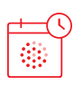
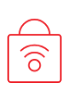
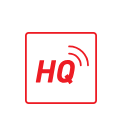
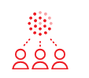

One link, two functions
Your scheduled event automatically turns into a
live stream page with chat as soon as you go live.
Use only one link to promote your event in
advance and during your broadcast.

Private access to your channel
Decide who can access your channel with access
settings enabled. Remain private indefinitely or
create one-off exclusive audio content for select
listeners only.

Optimal audio quality
Control audio quality as needed to suit bandwidth
restrictions or to match the quality required for
your type of content. With the desktop app, you
can switch between low, standard, and high
quality audio even while broadcasting.
Top level listener stats
Keep informed on how well your broadcasts are
performing with end-of-broadcast and weekly
stats emails. Get numbers on your unique
listeners, chat messages and hearts.

Detailed listener metrics
See how many unique listeners connected, how
long for, and which countries or cities they tuned
in from. View your listener stats over any
selectable time period, and export the most
relevant data as an easy to use spreadsheet file.
Go white label
With a unique livestream URL, you're free to build
your own website, app or player around your live
audio. We encode your livestream URL in mp3
format at a quality of 128kbps.
.webp)
.webp)

.webp)
.webp)